15 Abril, 2026
Escritório de Projetos do Polo Tecnológico Araucária
Inaugurado em 14 de abril de 2026, o escritório de projetos do Instituto Araucária.
Ler notícia completaConectando empresas, governo e academia para transformar o ecossistema de inovação de Santa Catarina.
Conheça o HubO Instituto Araucária é um ambiente de conexão entre empresas, universidades, escolas técnicas, poder público e sociedade civil. Transformando ideias em soluções reais, impulsionamos o crescimento econômico e sustentável da região da AMURC.
Integramos a Rede Catarinense de Centros de Inovação, gerida pela SCTI, atuando como motor do desenvolvimento regional e na criação de soluções para o mercado.

Promover um ecossistema colaborativo e impulsionar soluções tecnológicas regionais.
Ser referência estadual em crescimento econômico e qualidade de vida através da inovação.
Colaboração, Inovação, Sustentabilidade, Diversidade e Impacto Social.
O Instituto Tecnológico Araucária busca profissionais que desejam ir além da sua própria trajetória e contribuir com o crescimento de novos negócios através da troca de conhecimento, vivência e visão estratégica.
Se você tem experiência de mercado e quer gerar impacto real na nossa região, junte-se a nós.

Nosso Escritório de Projetos (PMO) é o núcleo de gestão do Instituto. Aqui, transformamos intenções em resultados estruturados.
Inaugurado em 14 de abril de 2026, o escritório de projetos do Instituto Araucária.
Ler notícia completa
Iniciativa busca facilitar acesso de empresas a recursos, editais e linhas de financiamento para inovação
Ler notícia completa
Centelha 3 com inscrições abertas até 4 de maio para impulsionar ideias de negócios com recursos e mentoria
Ler notícia completa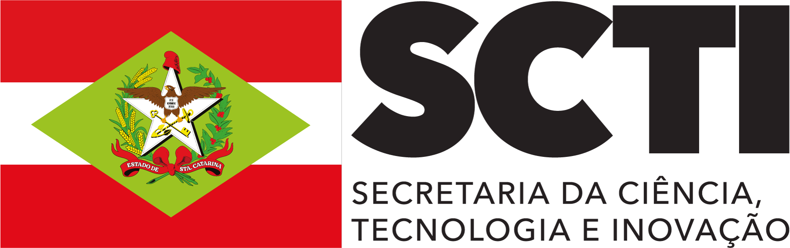
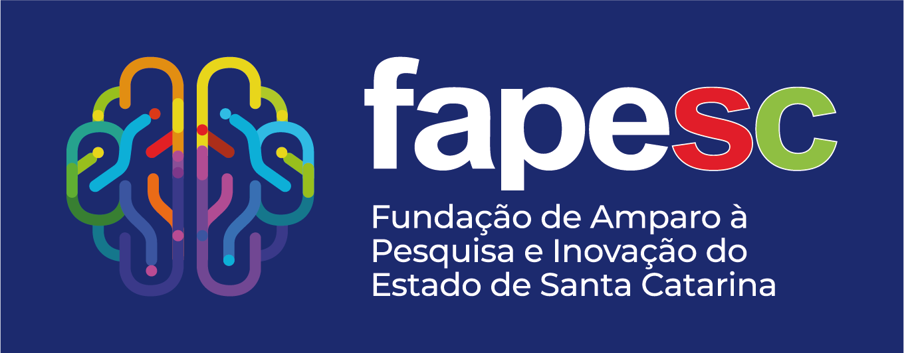
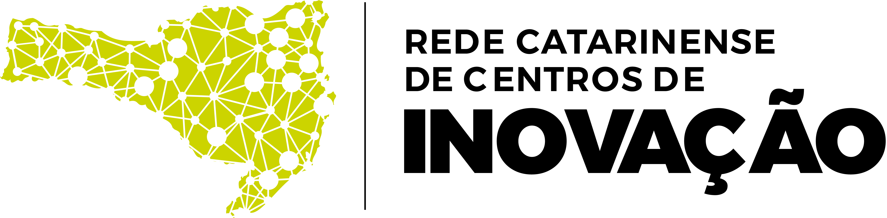
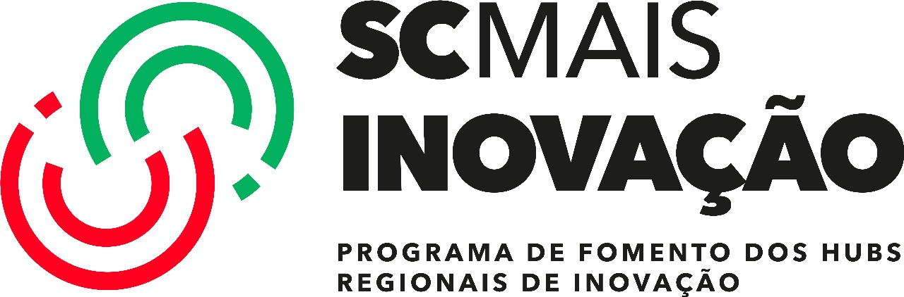
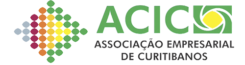
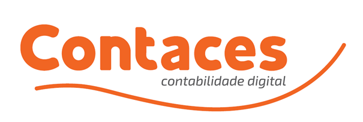
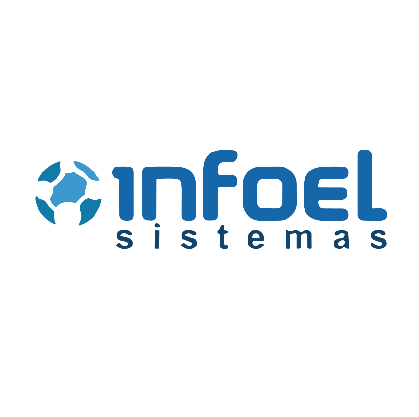
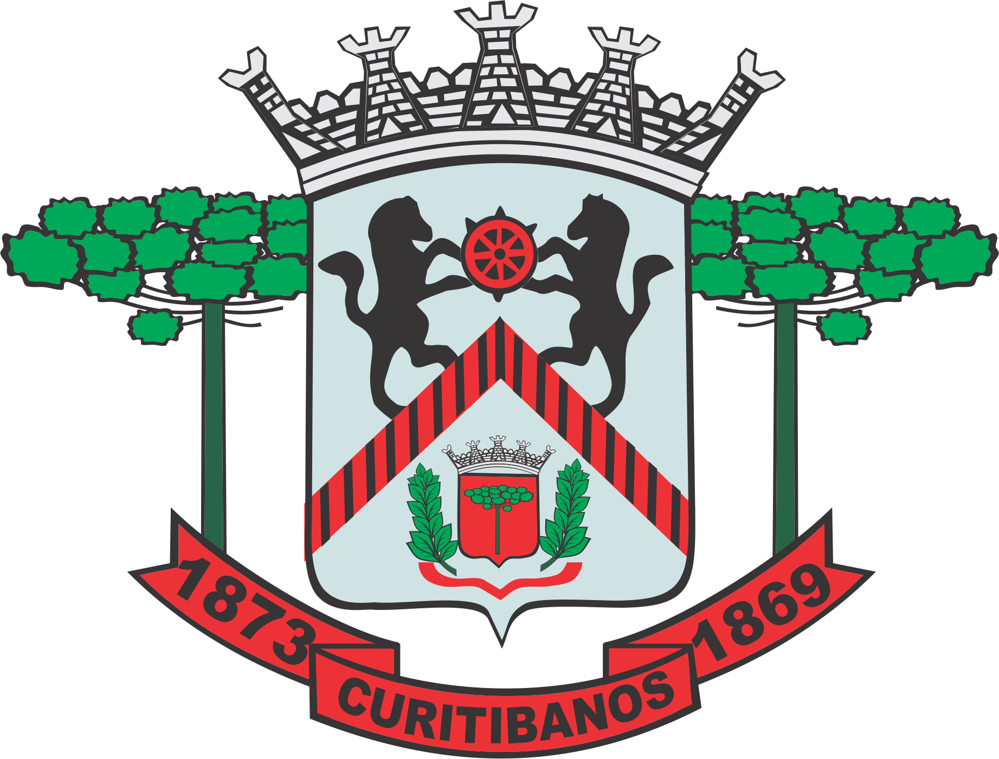
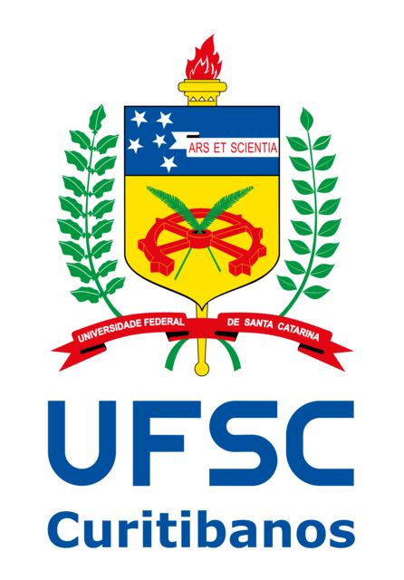
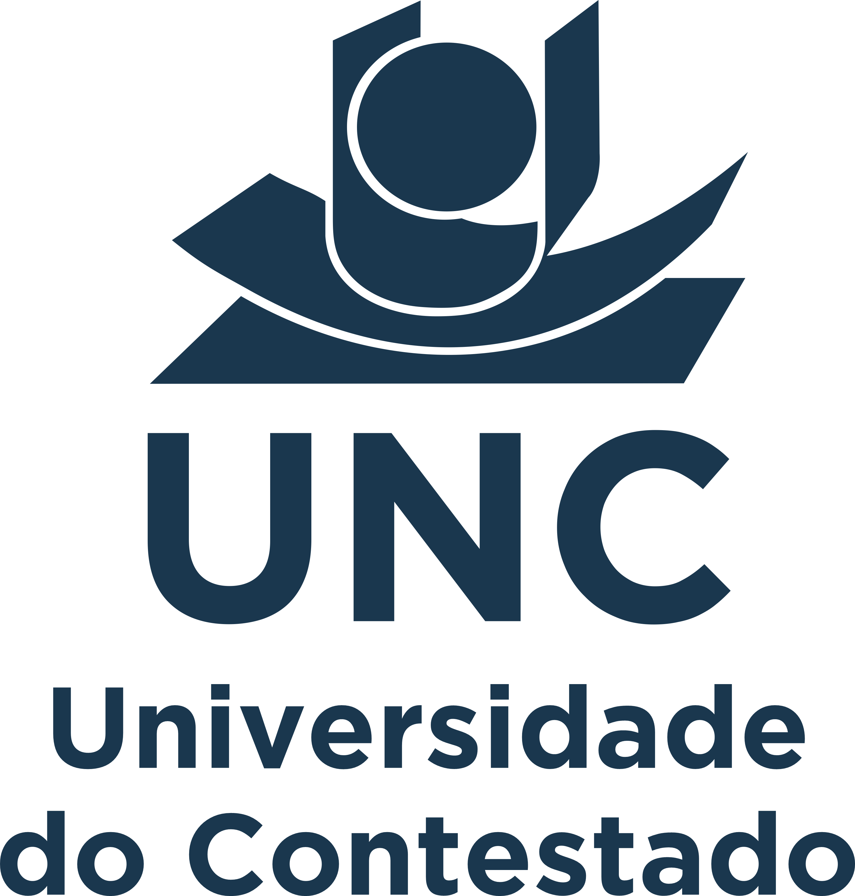
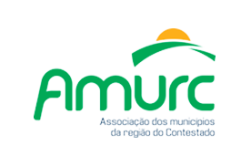
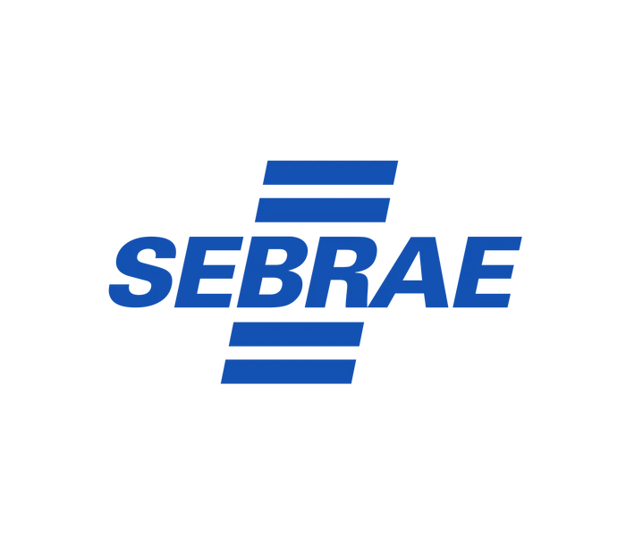
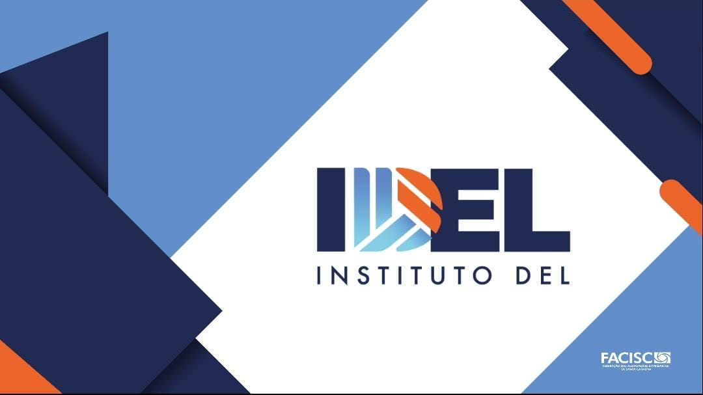
administrativo@institutoaraucaria.com.br
(49) 998412309
Rua Cornélio de Haro Varela, 1835 - Água Santa
Curitibanos - SC, 89520-000